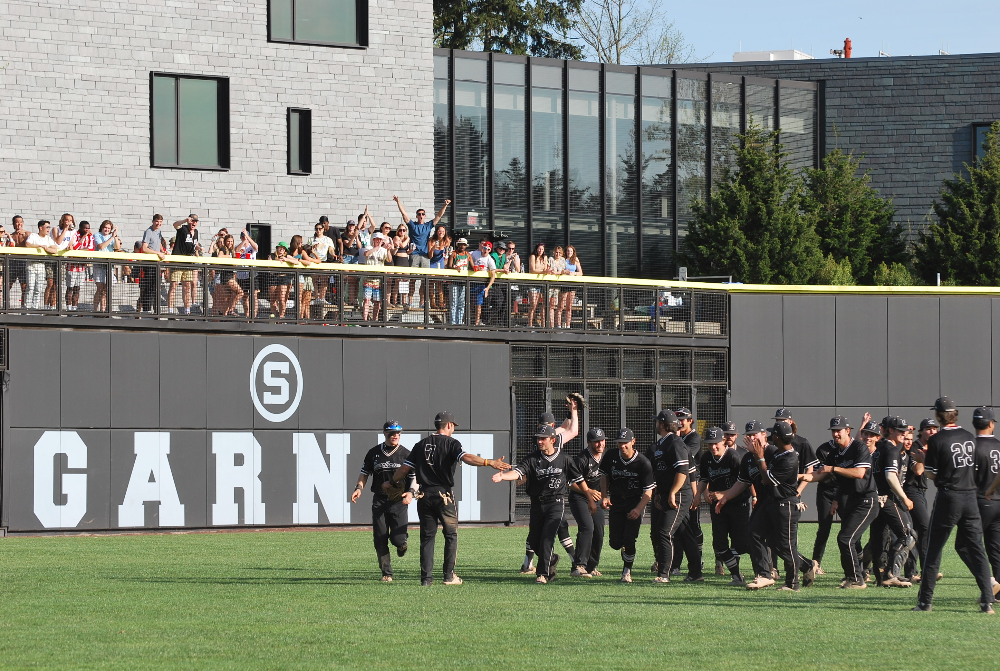

Personal
Take a look at a few of the ways I like to spend my time outside of my technical work.
Staying Active
I was on the NCAA baseball team all four years at Swarthmore and both years
that I was at Villanova. I was very lucky to travel the country and see some amazing places and ballparks, but I think the nicest
one was right at home in Swarthmore. Our field had a beautiful new dorm built into the left field wall, complete with a big porch
where students could watch the games, which made playing there a ton of fun. Check it out!

Since graduating, I’ve followed the natural progression of many former collegiate baseball players who still enjoy hitting round objects with
sticks, and these days I find myself on the golf course more than my wallet would like. Pickup basketball and padel are other favorites
of mine, and I'm planning on doing the 75 mile 'Bike MS: City to Shore' bike ride this fall.
Books
Below are a few books I've been working on recently, along with some quotes that either
made me laugh or do some serious thinking. Here's my preemptive defense to any totally understandable accusations that involve the words
"pretentious" or "boring":
1. Yes, these are all classics. No, that doesn’t mean I understood them on the first try. Or the second...
2. I know the reputation these books have for being boring, and I’ll admit I’ve come across a few duds. But when you find the right one, whether it’s old school cattle drives and gunfights or a lifelong revenge plot bankrolled by lost treasure on a remote island, you’ll be hooked.
The Idiot
by Fyodor Dostoyevsky
“What matters is life, nothing but life - its revelation, constant and eternal, while the discovery matters not at all!”
The Brothers Karamazov
by Fyodor Dostoyevsky
“For the mystery of man's being is not only in living, but in what one lives for.”

A Tale of Two Cities
by Charles Dickens
“'Then tell Wind and Fire where to stop,' returned madame; 'but don't tell me.'”
The Count of Monte Cristo
by Alexandre Dumas
“Misfortune is needed to plumb certain mysterious depths in the understanding of men; pressure is needed to explode the charge.”
Music
Here is a mix of artists I’ve been listening to lately, with a few song
recommendations for each one. If you click on an album cover, you’ll find some great live performances that are definitely worth
a watch.